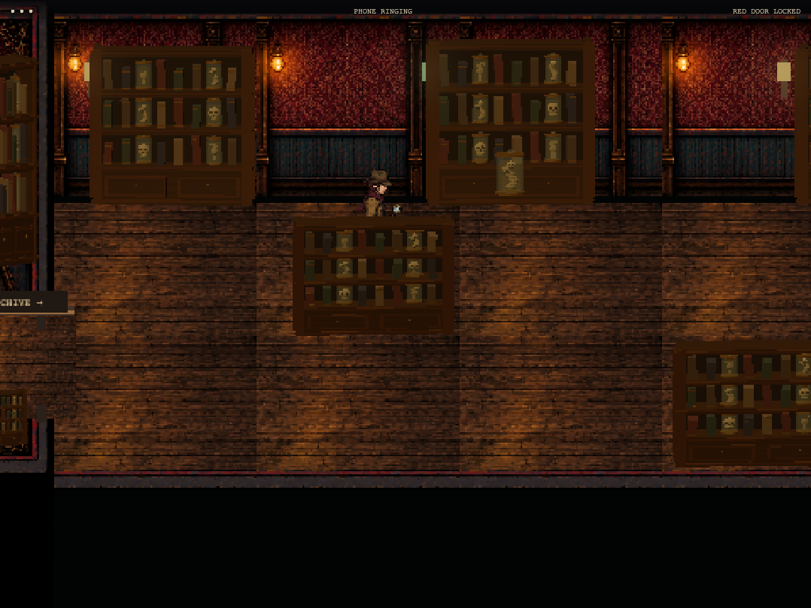
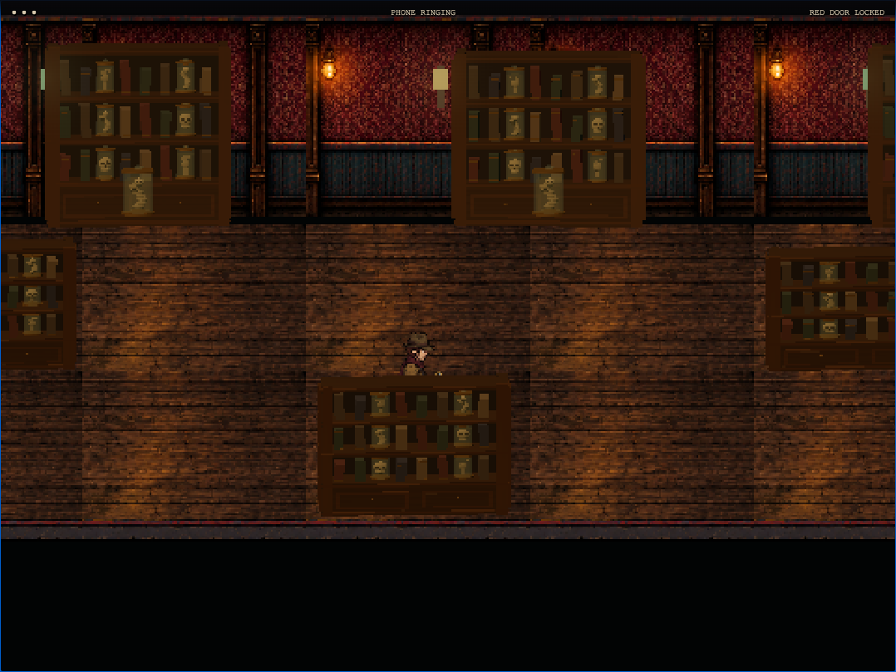
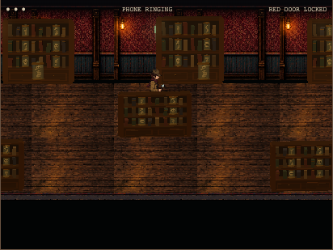
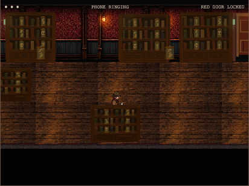

Play Level 5 · Chase checkpoint
The vertical cabinet faces no longer act as floor blockers. Each freestanding shelf has an 18-pixel-deep solid base, with a clear rear aisle and correct character occlusion. Matching corrections apply to the small entrance cabinet and upper side shelf.




Keyboard and touch shelf checks · Escape result · Model tests